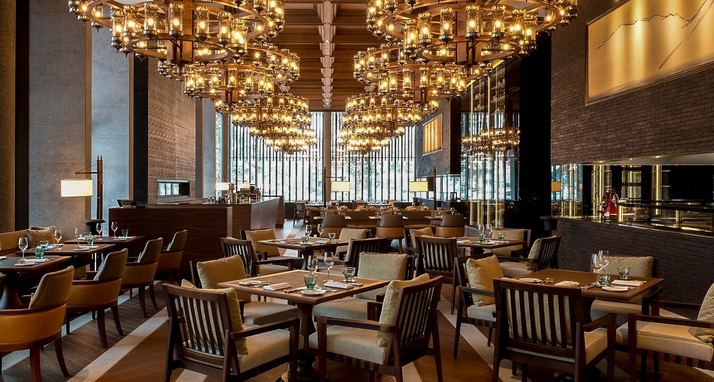

The Corner Bear
Los Angeles, USA
20.12.17
Good attention to detail. A little noisy, but the food was great. Would recommend trying the fish they serve. I went there in 2017 when I was in LA. Definitely worth the trip if you happen to be in LA. 6/10

The Parlour
Minneapolis, USA
20.06.13
Very nice staff. The food was OK, but the service was amazing. The decorations were also on point. I would still recommend a trip to this restaurant. I visited this back in 2013, but I bet it's still the same as it was then. 5/10

The French Clove
Bergen, Norway
10.12.15
Excusite food. Very helpful and kind staff. The wine, although expensive, is amazing. Would love to go again. 9/10
The Corner Bear
Oslo, Norway
12.03.18
I went here again, it was very similar to the one in LA. Good attention to detail. A little noisy, but the food was great. Would recommend trying the fish they serve. I went there in 2018 when I visited Norway. Definitely worth the trip! 6/10